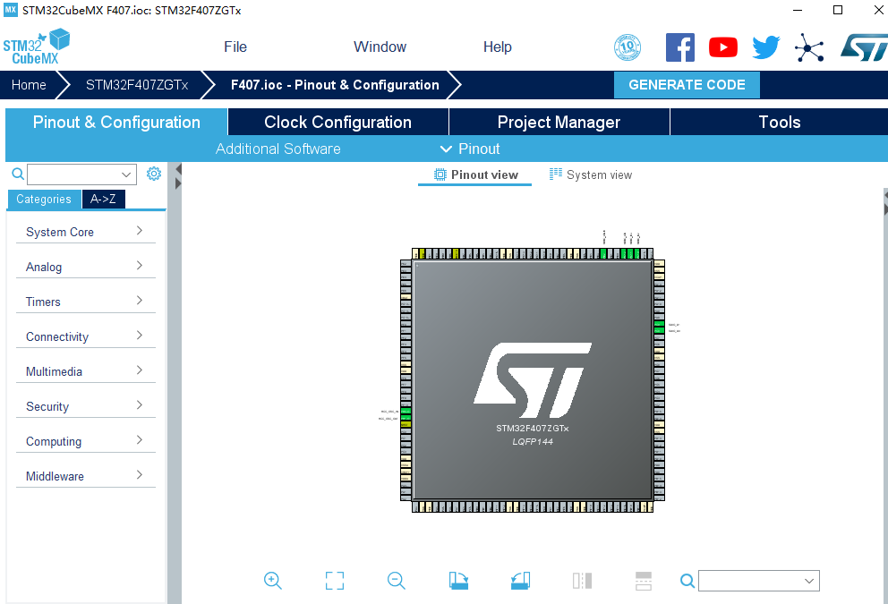
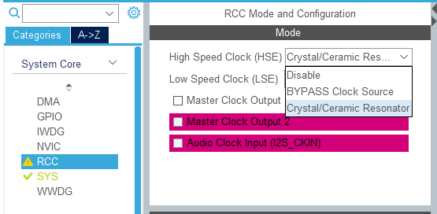
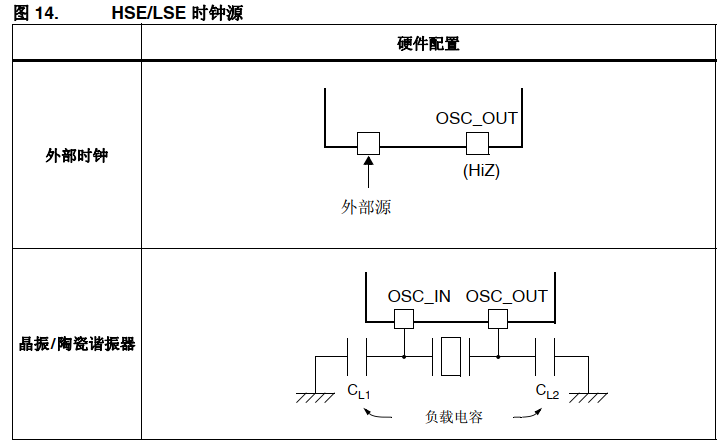
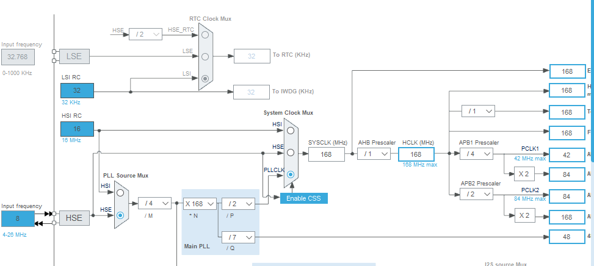
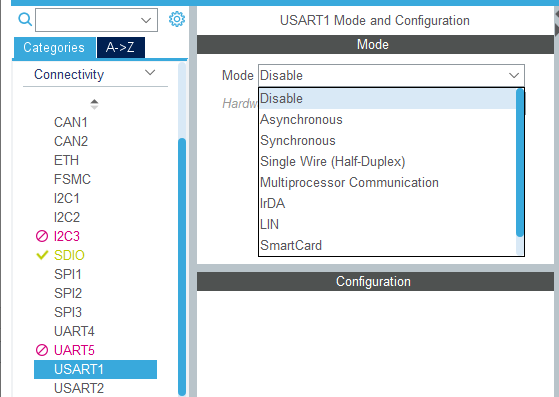
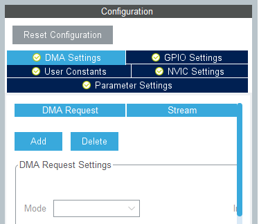
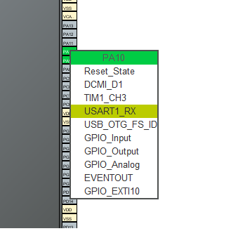
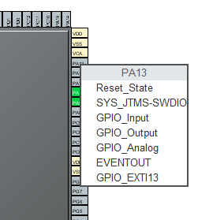

开发板：正点原子STM32F4探索者 （2019-08-10 22:04:39）
开发环境：MDK5.28.0.0 + STM32CubeMX5.3.0 + STM32CubeF4 V1.24.0
内容：使用STM32Cube配置LED0和UART1，实现LED0闪烁和UART1发送

STM32CubeMX选择芯片后界面。左侧栏为功能列表，配置相应的功能打开列表，会有详细功能名称；右侧为ST芯片模型，引脚分布。首先，应该配置芯片的时钟来源——芯片的时钟很重要，根据硬件实际配置时钟来源：打开 System Core 栏目下的RCC，即为芯片时钟配置。

RCC 配置界面。以外部时钟为例，STM32CubeMX中外部时钟配置可选类型为 Disable 、 BYPASS Clock Source（旁路时钟源） 、Crystal/Ceramic Resonator（石英/陶瓷 晶振） 三种类型。参考手册中介绍 HSE 如下图：

外部时钟即为旁路时钟源，只需要外部提供时钟接入OSC_IN引脚，OSC_OUT引脚悬空，对应选择为BYPASS Clock Source；谐振器即相当于石英/陶瓷 晶振，OSC_IN 与 OSC_OUT引脚都要连接，对应选择为Crystal/Ceramic Resonator。开发板使用的是晶振，所以RCC的HSE选项设置为Crystal/Ceramic Resonator。时钟的来源确定后需要配置芯片内部的多个时钟线，进入Clock Configuration页面，可以根据时钟树直观地配置时钟。下图所示为开发板时钟配置，开启外部时钟8MHz，PLL时钟来源于HSE，经过锁相环的分频与倍频后得到168MHz时钟，System Clock Mux时钟来源选择PLLCLK，AHB分频器设置1分频（不分频），得到168MHz的主频时钟，HCLK = 168MHz。

时钟配置完成以后，可以在 Connectivity 栏开启UART功能，USART1可以开启的模式有Asynchronous——异步通讯、synchronous——同步通讯、Single Wire（Half-Duplex）——单线（半双工）通讯，此处配置为异步通讯。
 
此外，这些功能也可以通过右侧的ST芯片模型直接在管脚设置。这种设置方法只需要我们单击对应的管脚，就会列出该管脚对应的功能，点击选择即可。从左侧列表开启功能时会默认选择一组引脚，如果与实际工程的引脚不符合可以采用先设置引脚功能再从左侧开启功能。如果需要启用仿真，还要配置相应的引脚并开启对应功能，否则使用仿真器会发生出现问题。

整体功能开启完毕后，可以从NVIC统一设置中断开启和优先级配置；在DMA栏统一设置相应数据流；GPIO栏可以设置启用的所有I/O接口，还可以自己定义这个引脚的名字（User Lable）；另外生成的函数会根据CubeMx的参数进行配置，所以在功能栏里设置对应功能的参数（parameter）。
功能配置完成无误后，就可以生成代码了。点击进入Project Manager界面，点击Project，在 Project Setting 框里设置Project Name、Project Location，Toolchain/IDE选项为设置生成工程的IDE类型，常用的是MDK-ARM V5（KEIL）和 EWARM V7（IAR）两种。设置完成后点击GENERATE CODE 即可生成工程代码。